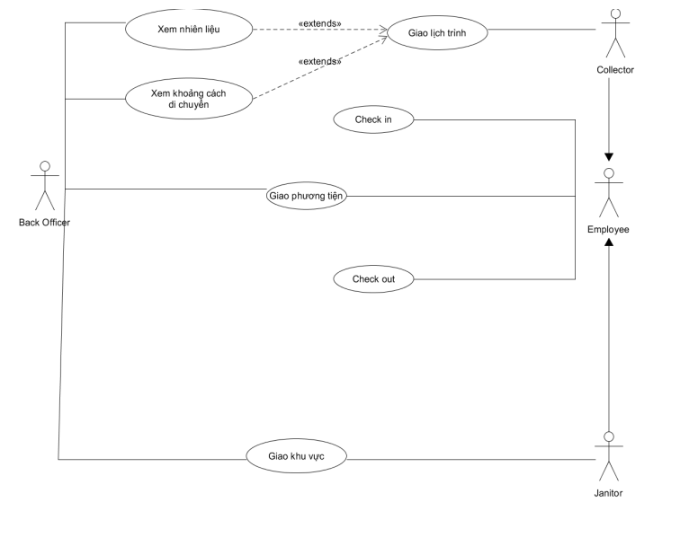

Task assignment module's use-case diagram and the use-case using a table format
Use-case diagram

Use-case using a table format
| Key | Value |
|---|---|
| Use-case ID | U1 |
| Use-case name | Giao lịch trình |
| Use-case overview | Giao lịch trình phù hợp cho Collector |
| Actor(s) | Back Officer |
| Preconditions | Biết được tình trạng của MCP, nhiên liệu và khoảng cách cần di chuyển |
| Steps | 1. Xem lịch của Collector và Janitor 2. Xem tình trạng phương tiện ( trọng tải, nhiên liệu). 3. Xem thông tin về MCP 4. Gửi lịch trình phù hợp cho Collector |
| Post Conditions | Collector nhận được lịch trình và thực hiện. |
| Exception Flow | Thông tin về MCP được cập nhật mỗi 15 phút, nếu sức chứa của MCP vượt quá 95%, Back Officer sẽ cập nhật lịch trình phù hợp và gửi cho Collector |
| Key | Value |
|---|---|
| Use-case ID | U2 |
| Use-case name | Giao khu vực |
| Use-case overview | Giao khu vực cho Collector |
| Actor(s) | Back Officer |
| Preconditions | Biết được tình trạng của khu vực cần thu gom và khoảng cách cần di chuyển. |
| Steps | 1. Xem lịch của Collector và Janitor 2. Xem thông tin về khu vực cần thu gom. 3. Gửi địa chỉ khu vực cần thu gom cho Janitor |
| Post Conditions | Janitor nhận được đia chỉ và tiến hành thu gom tại khu vực. |
| Exception Flow | Không |